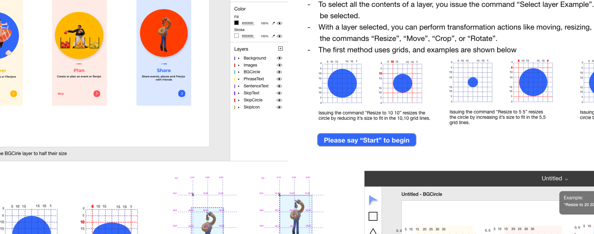
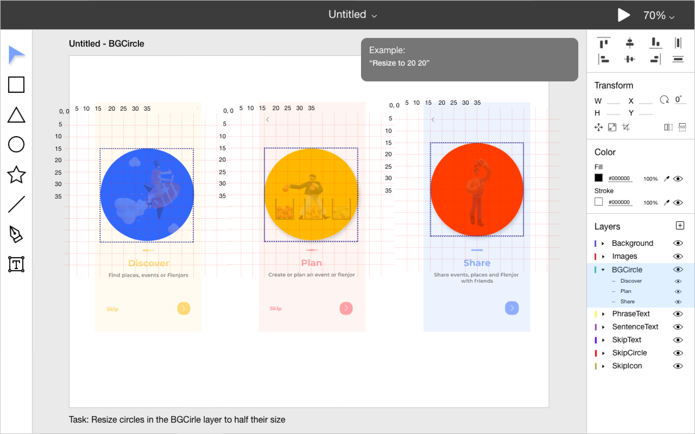
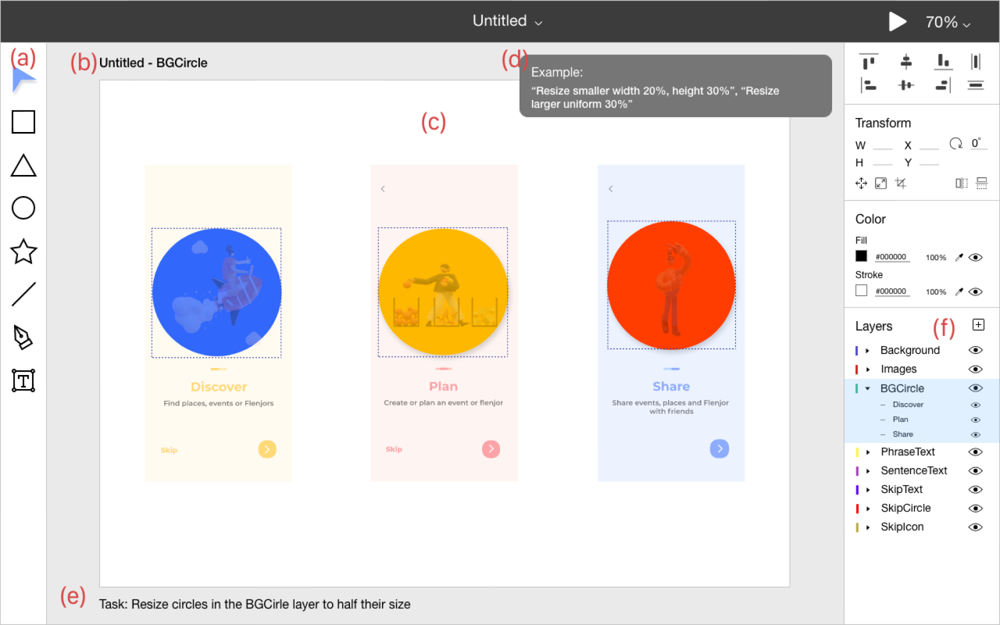
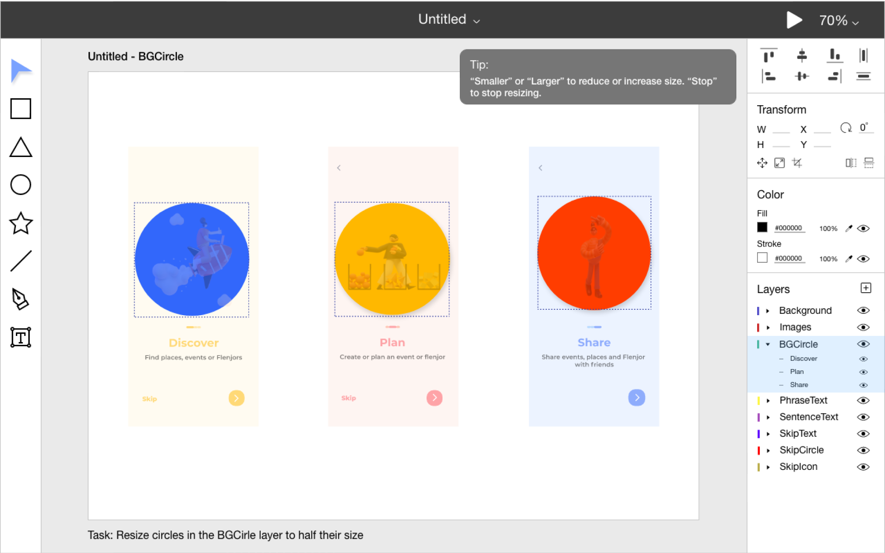
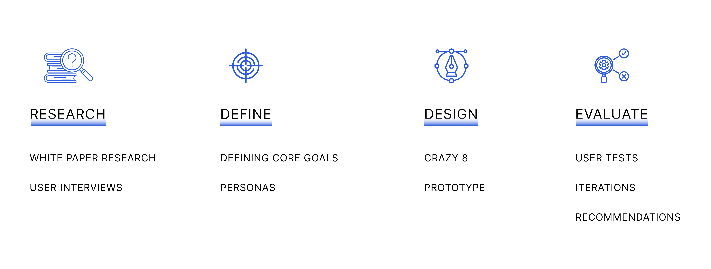
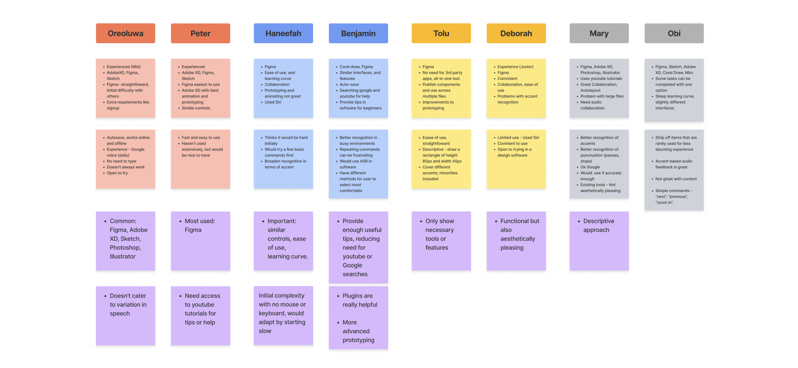
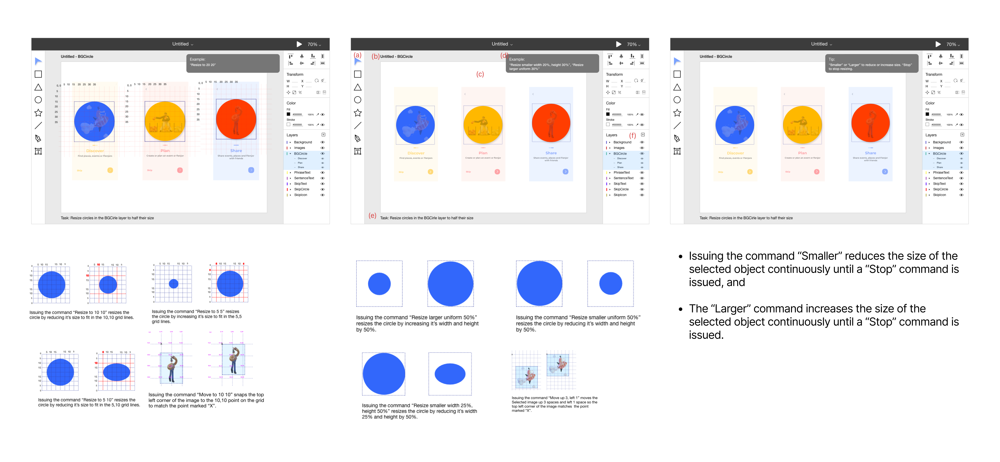
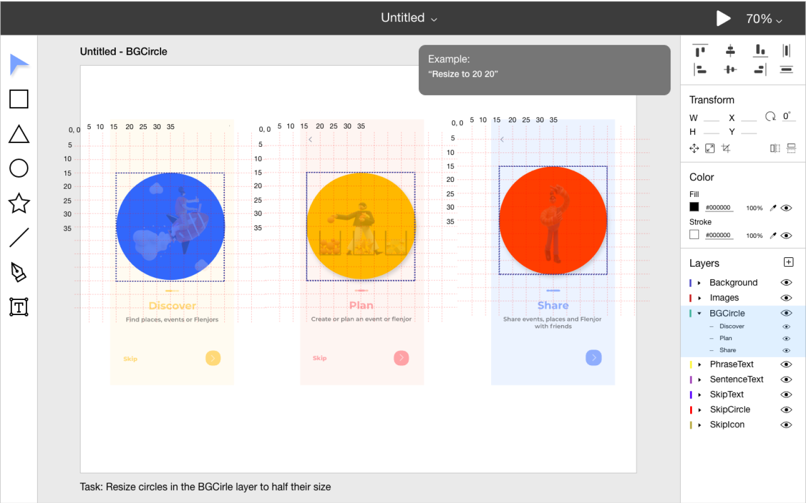

VOICE IT
Voice Interaction techniques for product designers.

TIMELINE
2 months
TOOLS
Pen and Paper, Adobe XD
MY ROLE
User research, Visual Design, Interaction Design, Prototyping, Testing
PROBLEM
How speech Interaction as an input method can be used to used to support design work.
Automatic speech recognition systems (ASR) have been applied in a range of different fields, however, there has been limited research on how speech interaction as an input method can support design work. This sparked the question - How can voice-driven commands be used to control graphical user interfaces of creative software to support designers with physical disabilities or motor impairment.
THE SOLUTION
Explored 3 different approaches to speech input for the proposed interface.
Grid
- This was implemented by showing gridlines on the selected item along with numbers for each horizontal and vertical line.
- A user can issue a command to resize an item by increasing or reducing its width and height to fit into the grid numbers issued.


Descriptive
- This approach allowed users “describe” what they want to be done to the system.
- The command followed the line of “Resize”, followed by “bigger” or “smaller” depending on the task then a percentage they wanted the shape’s width and height resized to.
Continuous
- The continuous approach is somewhat similar to the descriptive method.
- However, it is unique as it follows a continuous text input either "larger" or "smaller", and only stops the command when the user says “Stop”.

THE APPROACH

WHITE PAPER RESEARCH
Limited work that focused on speech interaction for product design work.
Starting with white paper research, I drew from research papers and journals on the topic of speech interaction techniques, highlighting it’s applications, successes and limitations. From this I recognized several other systems and tools exist to aid art creation, but none fully focused on speech interaction for product design work.
USER INTERVIEWS - INITIAL STUDY
“...Yes, I’d use one, especially if it’s at least 98% accurate.”
I conducted interviews with 8 product designers, I asked the participants the questions below to find trends in their use of creative/design softwares, their experience with speech interaction systems , as well as their ideal suggestions for a speech interaction system, then I organized the data through affinity mapping.
RESEARCH QUESTIONS:
- Experience level using creative softwares?
- What are some of the design or creative applications you use?
- Can you describe your experience with using these applications?
- What are the sucesses of these applications?
- What are the most frustrating parts of using these applications?
- Have you created any workarounds to help overcome these painpoints? If yes, what are they?
- If you could fix these applicaations, what would you change?
- Have you used any speech recognition systems? What do you think about them?
- What are the appealing features or successes of speech recognition systems?
- What is the biggest painpoint related to using speech recognition?
- Assuming you are unable to access a mouse and keyboards setup. How would you navigate a user interface's layout using speech only?
- Can you see yourself using a speech based design/creative application?

MAIN INSIGHTS
Keeping commands short and direct to reduce issues associated with speech recognition.
Based on the themes, I recognized that users were generally open to using a speech based design software, however were a bit skeptical due to some problems asscoiated with speech recognition.
THEME 1: Ease of use
- Ability to use any design software after a short period.
- Different softwares, but similar features, controls and layout
THEME 2: Help or tips
- Limited help or tips in software for onboarding.
- Have to rely on youtube or other sites for tutorials or help
THEME 3: Speech recognition
- Difficulty recognizing accents, punctuation and context.
- Keep commands short to reduce possible errors.
DESIGN
Implemented the Grid, Descriptive, and Continuous approach using Adobe XD’s voice prototyping feature.
I explored 3 different approaches: Grid, Descriptive, Continuous to speech interaction for the proposed interface. I then designed and implemented the interface using details that were adopted from other creative applications and user requirements from the Initial study. The design was implemented and tested using AdobeXD’s voice prototyping feature, which used Speech Recognition that provided the system with the ability to recognize voice or speech input and perform the appropriate action.

TESTING + HYPOTHESIS
I think users would prefer the descriptive approach because it follows the pattern of everyday speech
I conducted a series of user studies with 20 participants; 10 female, 10 male in two groups of product designers and non-product designers, to evaluate and collect initial feedback as well as qualitative data (Preference, learnability, suggestions) and quantitative data (completion time, success rate) from users. These approaches were presented to the participants in an A/B testing form so they could compare and select their preferred approach. I asked the participants to perform the following tasks:
Task 1: Resize circles in the BGCirle layer to half their size
Task 2: Resize items in the SkipIcon layer to twice their size
Task 3: Resize items in the SentenceText layer to half their size
Task 4: Resize items in the Images layer to half their size
Task 5: Resize items in the PhraseText layer to twice their size
Task 6: Resize items in the Background layer to twice their size
RESULTS + IMPROVEMENTS
Found from data that the descriptive and continuous approach were preferred as it provided a more humanoid feel.
From the results and suggestions participants had offered during the evaluation, several observations can be drawn:
- It was observed that the participants learned to perform the resizing tasks comfortably after an average of 2 tasks.
- There was no significant difference in task completion times or the learning curve, so it can be deduced that there is no significant difference in the learnability of the system between both groups.
- The descriptive and continuous approach were rated above the grid approach as the designers explained that it provided a more humanoid feel and seemed as if they were not just only giving instructions but also engaging in conversations with the computer.
- With regards to the preference of the artists for the three approaches, the overarching selection of the continuous approach revealed that speech recognition software would be most useful if it is designed in a way that would ensure simplicity, specificity, and ease of use.
Based on the feedback I continually iterated the design tomake some improvements:
Grid: Need for clarity
- A need for clarity in the grid approach, providing users with an option to select if they want to resize the object larger or smaller first before the grid shows up, allows the interface to only show the necessary grid lines.
- Gridlines are sometimes unclear or not visible when a smaller object is selected, an option to zoom in to them or just make the lines and numbers bolder would make it better.

Descriptive: Shorter Commands
- Making the commands shorter, as it currently requires a long string of commands to perform the resize action. “It can get a bit confusing when using the descriptive approach, as you have to say four to five words at a time to perform an action”.
Continuous: Adding metrics around border
- Showing the metrics in the continuous approach, that is the width and height of an object would make this approach significantly better. Adding the width and height size around the border of the object as it changes size can help to show what size it currently is and you can better tell when to stop.
CONCLUSION + REFLECTIONS
What I’ve learnt so far...
Speech interaction is not new, but it’s use in design softwares is limited. I was able to accomplish the main aim I set ou to achive; exploring and validating speech interaction as an approach to product design to support physically impaired designers. However, there are a few things, I’d note:
Testing with target audience: As this was intended to focus on accessibility and it’s potential to support designers with physical disabilities or motor impairment, Participants with motor impairments should be recruited to test and analyze the proposed system.
Better tools: Without time constraints, I’d take this into the development phase to fully grasp the feasibility and limitations of the solution, as wireframes and prototyping as good a they might be can only do so much. I would also explore other forms of interaction as this focused on speech recognition only.
More research: For proper observation of the amount of training and learning curve required for people to fully grasp the system, a longitudinal study would be used to help boost the accuracy of results and better conclusions can be drawn. A larger sample size would also be considered as it would provide richer data from a wider variety of results.